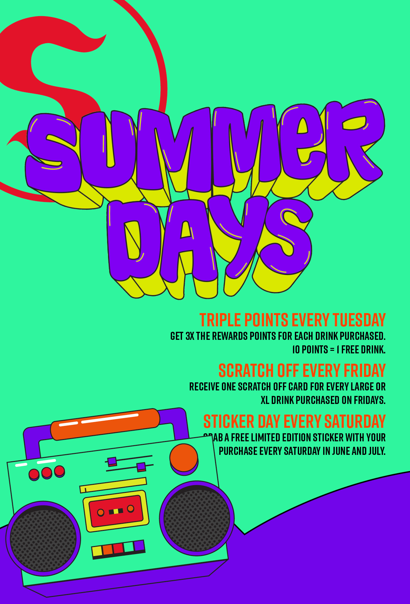
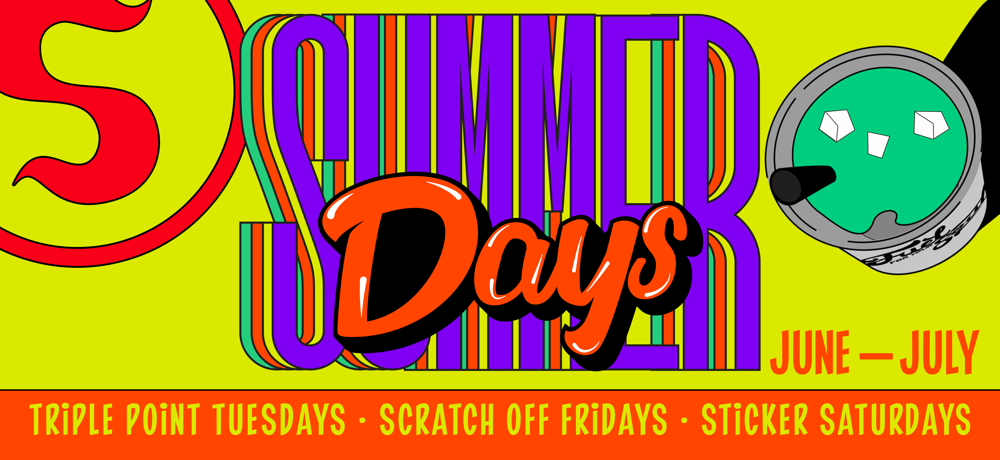
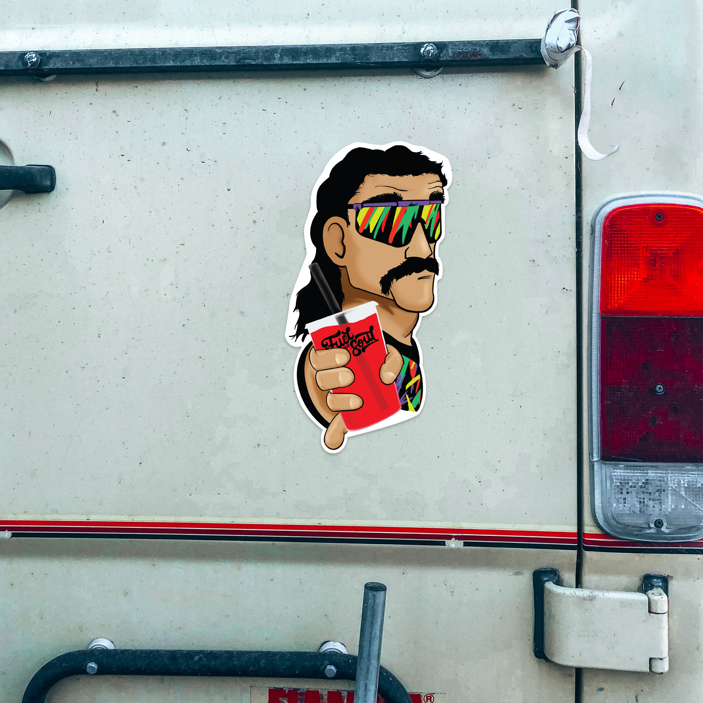
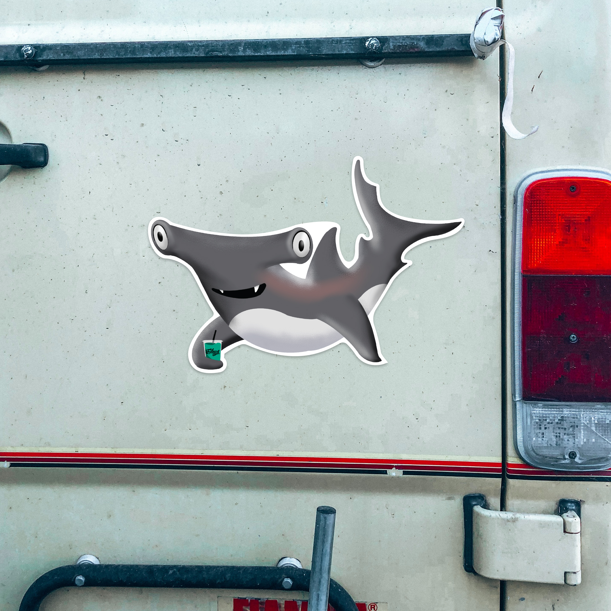
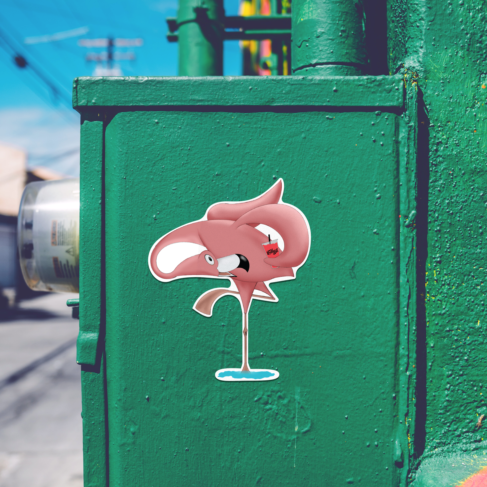
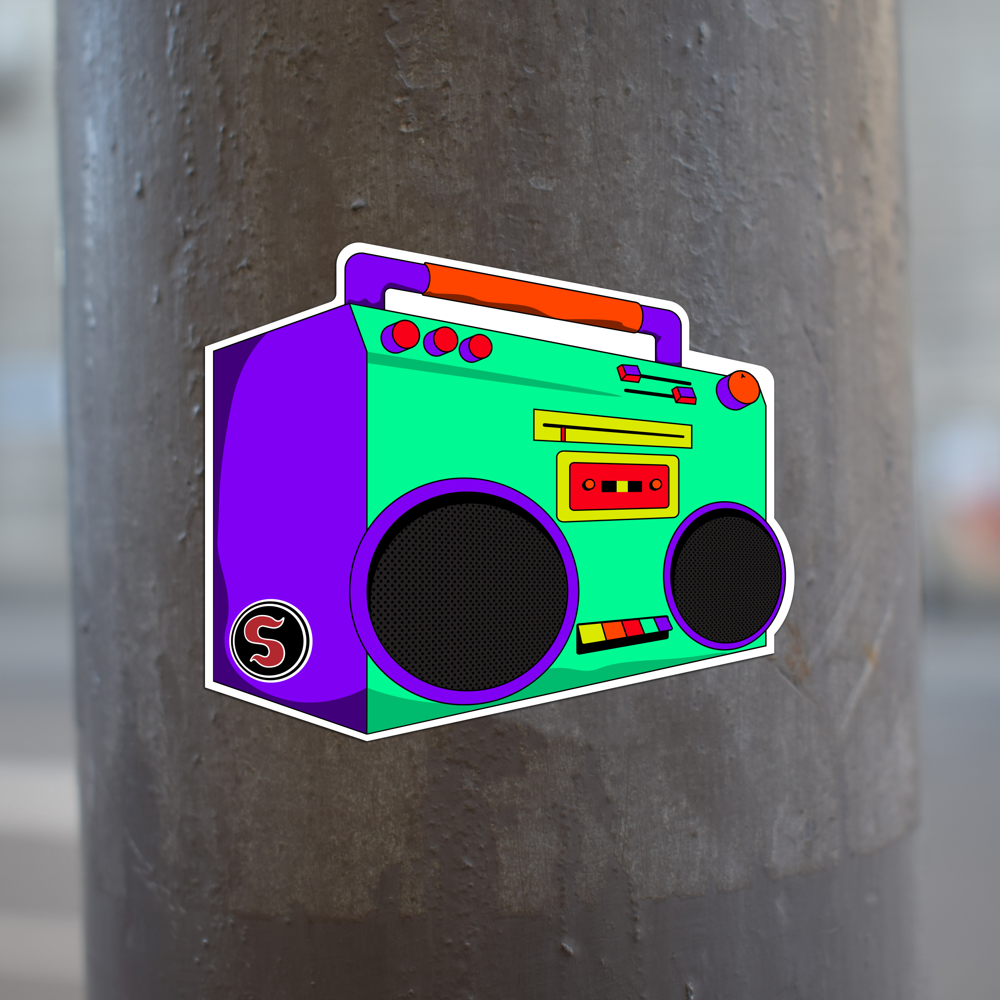
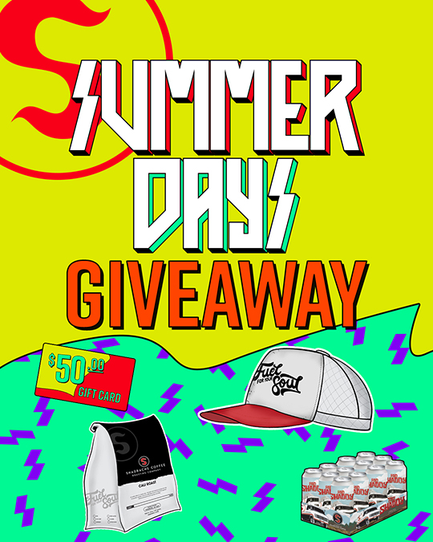
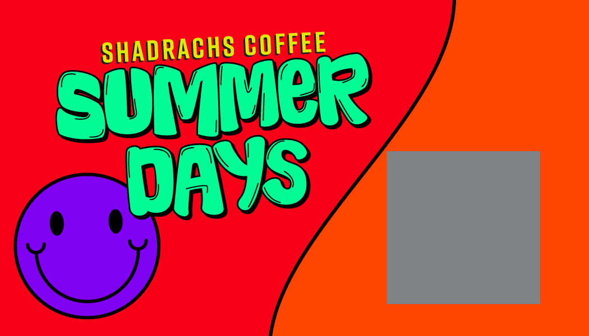

Seasonal Campaign · Shadrachs Coffee
A recurring summer campaign for Shadrachs Coffee — built around a rotating weekly structure and carried by one motion-first visual system.

Background & Objective
Every summer, Shadrachs runs a Summer Days promotion on a rotating weekly structure. The job is the full campaign identity and every piece of collateral that carries it, in-store and out.

Key Decisions & Creative Rationale
The Collateral
Limited-edition stickers, scratch cards, giveaway posters, and social — all pulled from the same Summer Days system.






Campaign Reel
The animated social reel that set the tone for every static piece that followed.
Summer Days — Social Reel
Process
Start with a style found on Pinterest, build the "Summer Days" wordmark and lockup in that style, then move straight into animation.
Whatever the animation settles on — pacing, texture, color behavior — sets the tone for every static piece that follows. Motion drives the static work, not the other way around.
Outcome & Impact
Noticeably longer lines specifically on Scratch-Off Fridays and Sticker Saturdays — the two mechanics built around a physical, collectible reward.